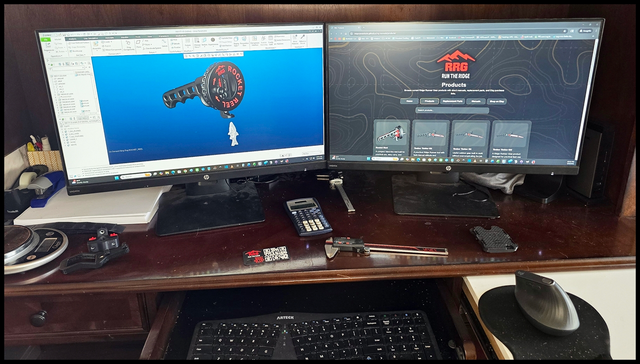
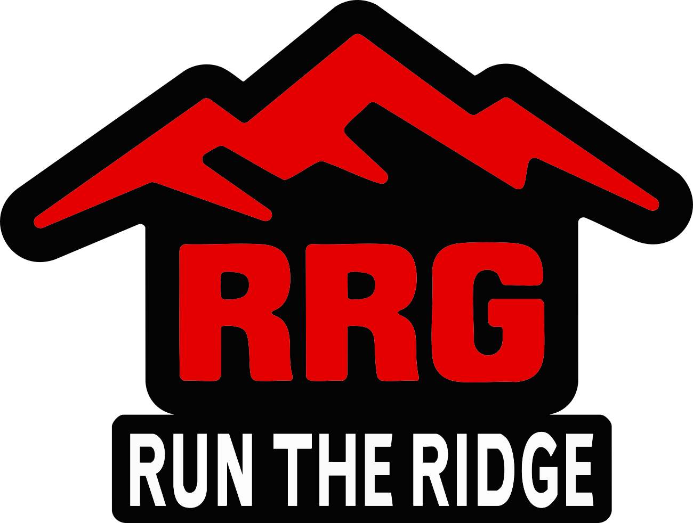
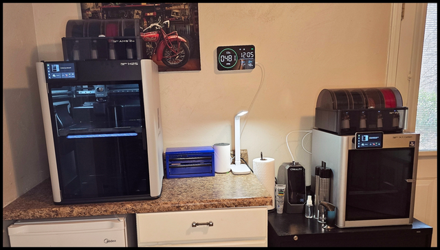
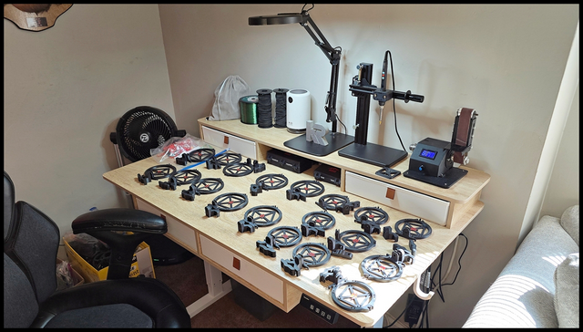
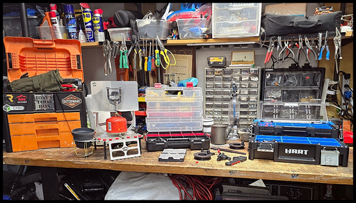
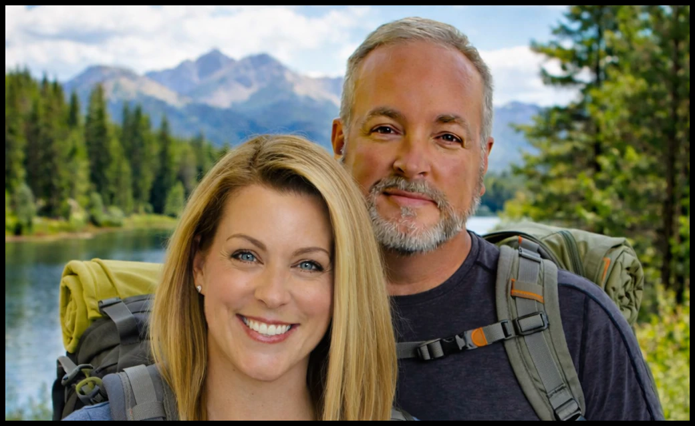

Engineering & Design
Every Ridge Runner product begins as a detailed engineering model in Creo.
Design comes first. Every feature should have a reason to exist, and every part should have a purpose before it ever reaches the trail.

Built in the Appalachians for those who believe the outdoors should feel wild, capable, and just a little more comfortable.
Ridge Runner Gear began in the mountains of Blue Ridge, Georgia, at the southern edge of the Appalachian range.
Around there, locals joke that mountain people are “ridge runners” with one leg longer than the other from walking hillsides their whole lives. Growing up in those mountains builds a deep appreciation for the outdoors—and for the gear you rely on when you’re far from the trailhead.
After retiring from a career as a mechanical design engineer, I began spending more time doing something I’ve always loved: luxury base-camp backpacking.
I enjoy the wilderness, but I also appreciate a few creature comforts while roughing it. On trips with friends, we kept finding ourselves saying the same thing:
“Wouldn’t it be nice if…”
Wouldn’t it be nice if one piece of gear could do two jobs?
Wouldn’t it be nice if we could carry less but still have everything we need?
Wouldn’t it be nice if this simply worked better?
Those questions became Ridge Runner Gear.
Design rugged outdoor tools that do more, weigh less, and make the experience better.
Ridge Runner Gear is a small workshop brand built around real use, real engineering, and real field experience.
Every product starts with a problem worth solving. From there it becomes a detailed CAD model, moves through prototyping and field testing, and is refined until the design does what it was intended to do.
Only then is it ready to become Ridge Runner Gear.

Every Ridge Runner product begins as a detailed engineering model in Creo.
Design comes first. Every feature should have a reason to exist, and every part should have a purpose before it ever reaches the trail.

Precision parts are produced using advanced 3D-printing technology that allows us to rapidly test ideas, improve designs, and manufacture dependable products in small batches.
That gives us something large-scale manufacturing often doesn’t: the freedom to keep improving.

Components are assembled, inspected, and finished by hand.
Small-batch production allows us to pay attention to the details and make sure each piece of gear is ready for practical use before it leaves our shop.

This is where gear gets assembled, tested, adjusted, broken, improved, and tested again.
And every now and then, a future Ridge Runner product sneaks onto the workbench before it’s officially ready for the world.
We believe outdoor gear should earn its place in your pack.
If a product doesn’t make a trip lighter, simpler, more capable, or more enjoyable, it probably doesn’t belong in the Ridge Runner Gear lineup.
Our designs focus on practical function, multi-use capability, repairability, and long-term value. We want gear that works hard, lasts a long time, and can be repaired or refurbished whenever practical instead of simply being thrown away.
Whenever possible, we use American-sourced materials and components. Materials are selected for what they contribute to the design and how they perform outdoors, including:
We don’t add features just so we can add them to a product description.
If something is there, it should have a reason to be there.
At Ridge Runner Gear, we believe you shouldn’t have to choose between comfort and capability.
We build gear for people who appreciate practical tools, thoughtful design, and trail-ready durability without carrying more than they need.
Luxury in the outdoors isn’t about excess.
It’s about having the right gear—the kind that makes camp life easier, more efficient, and more enjoyable.
Some folks call it roughing it.
We just think it ought to work better.
Our mission is to design the gear we wish existed and build the company we wish we could buy from.
We believe in:
Standardizing the repeatable.
Innovating the meaningful.
And enjoying the impossible becoming routine.
Ridge Runner Gear exists to create thoughtful, practical outdoor products that solve real problems and genuinely improve people’s outdoor experiences.
Our goal isn’t simply to sell more gear. It’s to build a sustainable business that earns enough to keep doing what we love most—creating new products, refining good ideas, solving problems, and finding better ways to help people enjoy the outdoors.
Ridge Runner Gear products are designed to work together.
Start with the core gear you need today, then expand your system as your adventures grow. Add capability when you need it without having to buy everything at once.
The result is gear that grows with you rather than gear you outgrow.
Ridge Runner Gear is a faith-based company, guided by Christian values in how we design gear, serve our customers, and conduct our business.
We believe the outdoors is one of God’s greatest gifts, and we’re passionate about helping others enjoy it responsibly and respectfully.
That’s why we practice Leave No Trace principles and strive to be good stewards of the wild places we love.
We also believe that a good name is worth more than gold.
That principle matters to us because Ridge Runner Gear isn’t a faceless company. Our name is on what we make, and we want to be proud of every product that carries it.
Ridge Runner Gear products are designed, manufactured, assembled, and tested in Georgia with rugged durability and refined utility for people who actually use their gear.
Whenever practical, we also choose American-sourced materials and components while selecting each material for the job it needs to do.
We’re not interested in making more stuff just to make more stuff.
We’re interested in making better tools for the trail, the campsite, the kayak, the hunt, and the kinds of adventures that leave you with a story worth telling.
Ridge Runner Gear didn’t start with a business plan.
It started around campfires, on trails, and during those moments when somebody looked at a piece of gear and said:
“Wouldn’t it be nice if…”
For a design engineer, that’s a dangerous question—because once I see a problem, I have a hard time leaving it alone.
Every Ridge Runner product begins with that same idea: there has to be a better way.
Sometimes the answer is making something lighter. Sometimes it’s making one tool do the job of two. Sometimes it’s creating an entirely new solution because the thing we wanted simply didn’t exist.
That’s the part of Ridge Runner Gear I enjoy most.
Taking something that once seemed difficult—or even impossible—and working on it until one day it becomes routine.
Thank you for supporting Ridge Runner Gear and allowing us to keep creating.
— Tony
Founder & Designer, Ridge Runner Gear

Founders, Ridge Runner Gear
Ridge Runner Gear is intentionally small.
Tony handles product design, engineering, prototyping, and much of the manufacturing. Tara is an important part of the business behind the scenes and alongside Tony as Ridge Runner Gear continues to grow.
Being small means we can stay close to our products and, more importantly, close to the people who use them.
We’re building Ridge Runner Gear the same way we build our products:
Thoughtfully. Purposefully. And one adventure at a time.
Built in the Appalachians. Tested on the ridge.